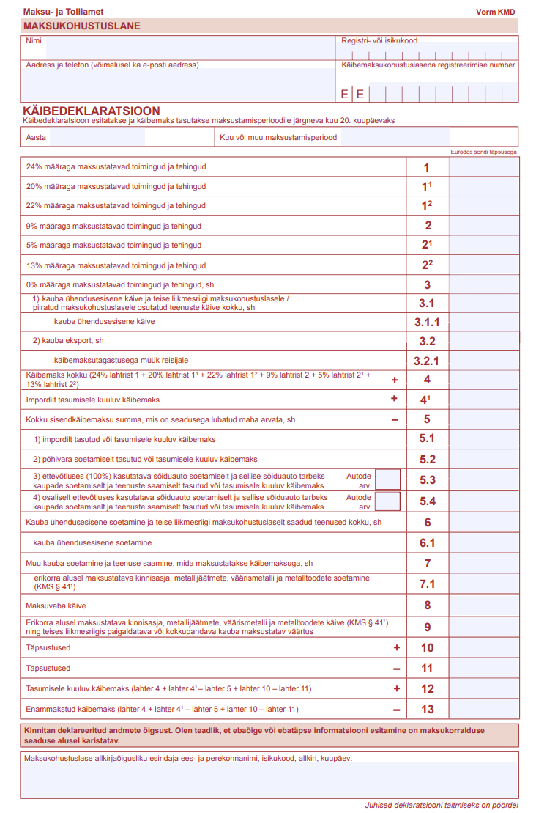
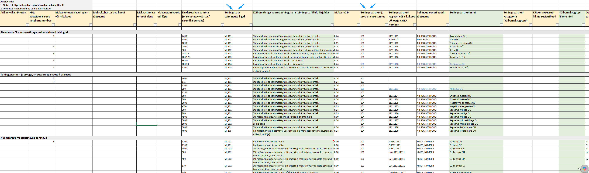

Päevakord
- 1Mis on andmepõhine aruandlus? — miks muutub + ajakava
- 2Mis muutub — KMD praegu vs uus KMD
- 3Millal ja kui tihti esitada?
- 4KMD klassifikaatorid — vastab küsimusele: "Mis tüüpi/liiki tehing see on?"
- 5Mida peame Directos arendama? (5.1–5.7) — sh. Directo KMD UI prototüüp
- 6Edasised sammud
Mis on andmepõhine aruandlus?
Mis on APA?
Andmepõhine aruandlus (APA) on osa riiklikust Reaalajamajanduse programmist. Eesmärk on esitada aruandluse alusandmed riigile masinliidese kaudu otse majandustarkvarast — struktureeritud ja masinloetavas formaadis, mis võimaldab automaatset töötlemist.
Täna
Ettevõte täidab deklaratsioonivorm → saadab riigile kokkuvõtted
Tulevikus
Ettevõte saadab üksikud tehinguandmed → riik koostab deklaratsiooni ise
Mida see tähendab praktikas
- Enam ei esitata klassikalisi deklaratsioonivorme
- Andmed edastatakse otse majandustarkvarast — masinloetaval ja standardiseeritud kujul
- Riik summeerib numbrid automaatselt ja asetab need õigetele ridadele vastavalt tehingute klassifikaatoritele
- Faili üleslaadimise võimalus säilib — muutub ainult formaat
Praegune failiformaat
XML
MTA oma standard
Uus failiformaat
XBRL GL
Rahvusvaheline standard majandustehingute vahetamiseks
Ajakava
⚠ Aega on vähe
Arenduseni on ~1 kuu. Kõik põhiarendused peavad olema valmis 2026 sügiseks, et testimiseks aega jääks.
Mis muutub — KMD praegu vs uus KMD
| Aspekt | KMD praegu | Uus APA KMD |
|---|---|---|
| Vorm | Klassikaline deklaratsioon (read 1–13) | Tehingupõhised algandmed |
| Sisu | Kokkuvõtlikud summad | Iga tehing eraldi klassifitseeritult |
| Failiformaat | XML (MTA oma standard) | XBRL GL (rahvusvaheline) |
| KMD + VD | Kaks eraldi aruannet | Koondatud ühte andmefaili |
| Kes koostab deklaratsiooni? | Raamatupidaja / tarkvara | Riik ise, automaatselt |
| Tehingupartneri andmed | KMD lisadel INFA/INFB, koondina partneri kohta (≥1000 €) | Arve kaupa, reg-kood kohustuslik (≥1000 €) |
| Klassifikaatorid | KMK kood → KMD rida (sektsioon) | Riiklikud taksonoomia koodid — M_101 jne (50+) |
Oluline
APA KMD ei ole enam traditsiooniline käibedeklaratsiooni aruanne, vaid tehinguklassifikaatoritel põhinev detailne tehinguandmete kogum. ERP peab suutma eristada tehingu tüüpi, maksustamise viisi, sisendkäibemaksu liiki, soetuse liiki, pöördmaksu, kassapõhisust jne.
KMK kood klassifitseerib tehingu ja sektsioon määrab, millisele KMD reale see läheb.
Taksonoomia kood (nt
M_101, O_401) klassifitseerib tehingu täielikult — kood ise sisaldab kogu vajalikku infot APA KMD genereerimiseks, eraldi sektsiooni välja ei ole vaja.



Andmete esitamine — millal ja kui tihti?
Praegu (2025–2026)
1× kuus
Tähtaeg maksustamisperioodile järgneva kuu 20. kuupäev — sama mis KMD praegu
Tulevikus (pikemas perspektiivis)
Reaalajas?
Võimalik liikumine tehingupõhise ehk pidevesitamise suunas — iga tehing saadetakse kohe
Mida tehingupõhine esitamine muudaks?
- Andmed edastatakse kohe tehingu toimumisel, mitte kuu lõpus
- 1000 € piirmäär kaob — see piirmäär põhineb partneri kuise kogusumma arvestusel, mis pole reaalajas esitamisel enam rakendatav
- Directo peaks toetama automaatset "push" mehhanismi iga kande salvestamisel
⚠ Hetkel kinnitamata
Tehingupõhise esitamise täpne ajakava ja nõuded ei ole MTA poolt veel avaldatud. 2027. aastaks on kohustuslik kuine esitamine — reaalajas esitamine on tõenäoliselt järgmine etapp.
⚠ Vana KMD aruanne peab Directos ellu jääma
MTA on kinnitanud: enne 1. jaanuari 2027 maksustamisperioodide andmeid saab esitada ja parandada vanas XML-formaadis edasi. Alates 01.01.2027 ei võeta enam vastu vana XML-i — ainult XBRL GL.
See tähendab, et Directos peab vana KMD aruanne säilima seni, kuni vanu perioode enam korrigeerida ei tule. Mõlemad formaadid peavad teatud üleminekuperioodil paralleelselt toimima.
KMD klassifikaatorid — vastab küsimusele: "Mis tüüpi/liiki tehing see on?"
Täna — Directo KMK koodid
~35
koodi
Uues süsteemis — taksonoomia koodid
50+
koodi, 4 sektsiooni (M, O, S, A)
Tehingute ja Toimingute liigid
| Sektsioon | Koodid | Sisu |
|---|---|---|
| M_1 | M_101 – M_105 | Standard- ja soodusmääraga müük |
| M_2 | M_201 – M_212 | Nullmääraga (0%) müük |
| M_3 | M_301 – M_304 | Maksuvaba käive |
| S_1 | S_101 – S_106 | Pöördmaksustatavad soetused (standard-, soodusmääraga ja maksuvabad) |
| O_1 | O_101 – O_106 | Sisendkäibemaks — üldine mahaarvamine |
| O_2 | O_201 – O_204 | Sisendkäibemaks — põhivara soetamine |
| O_3 | O_301 – O_310 | Sisendkäibemaks — sõiduautod (100% ja 50%) |
| O_4 | O_401 – O_406 | Sisendkäibemaks — pöördmaksustatavad soetused |
| O_5 | O_501 – O_502 | Sisendkäibemaks — arvestuslikud kanded |
| O_6 | O_601 | Sisendkäibemaksu korrigeerimised |
| A_1 | A_101 | Arvestuslikud kanded — maksustatavad (omatarve, impordi maksustatava väärtuse muutus, laoarvestuse erisused) |
Tehingupartneri erisuse tunnus (identifierCategory)

Mida peame Directos arendama?
Lühidalt
Directos peab olema uus KMD aruanne, mis võiks olla sarnane e-MTA kasutajaliidesega. Aruanne võimaldab andmeid kontrollida ja sealt ka parandada.
Directo peab suutma genereerida XBRL GL formaadis XML-faili ja saatma selle X-tee kaudu EMTA-le (või XML-faili allalaadimine).
5.1
KMK kaart
4 uut välja + mappimine
5.2
Dokumentide KM tüüp
Asetaja + muudetav väli
5.3
Kliendi-/hankijakaart
Isiku tüüp + salastatud
5.4
Andmete agregeerimine
1000 € loogika
5.5
KM-grupp
Uus andmeedastuse loogika
5.6
XML generaator
XBRL GL struktuur
5.7
Uus KMD aruanne + saatmise töövoog
3 nuppu + validatsioon
KMK kaart — 4 uut välja + mappimine
Igale KMK koodile määratakse vastav KMD klassifikaator. Klassifikaatorite nimekiri on asetajas fikseeritud — tuleb uuendada, kui riik klassifikaatoreid muudab.
Igale KMK kaardile lisatakse müügi-, ostu-, soetuse- ja arvestusliku kande KM tüüp.
Osad vajalikud KMK koodid puuduvad täna Directos — tuleb luua uued.
| Uus väli | Kasutusel | Näide |
|---|---|---|
| Müügi KM tüüp | Müügiarve kandel | M_101 |
| Ostu KM tüüp | Ostuarve kandel | O_101 |
| Soetuse KM tüüp | Pöördmaksustataval tehingul | S_101 |
| Arvestusliku kande KM tüüp | Arvestuslikul kandel | A_101 |
Näide — KMK 26 „Kauba ühendusesisene soetamine (pöördkäibemaks)"
| Väli | Väärtus | Seletus |
|---|---|---|
| Müügi KM tüüp | tühi | Müüki ei ole |
| Ostu KM tüüp | O_401 | Sisendkäibemaks — ühendusesisene kaup pöördmaks |
| Soetuse KM tüüp | S_101 | Kauba ühendusesisene soetamine |
| Arvestusliku kande KM tüüp | tühi | Arvestuslikku kannet ei ole |
Näide — KMK 1 „24% määraga maksustatavad toimingud ja tehingud"
| Väli | Väärtus | Seletus |
|---|---|---|
| Müügi KM tüüp | M_101 | Müük 24% KM määraga |
| Ostu KM tüüp | O_101 | Sisendkäibemaks 24% määraga |
| Soetuse KM tüüp | tühi | Pöördmaksustamist ei ole |
| Arvestusliku kande KM tüüp | tühi | Arvestuslikku kannet ei ole |
Dokumentide KM tüüp — asetaja + muudetav väli
Põhimõte
Igale dokumendile (müügiarve, ostuarve, kulutus, kanne) lisatakse väli KM tüüp. Väärtus asetub automaatselt KMK kaardi kaudu, kuid kasutaja saab seda vajadusel käsitsi muuta.
| Dokument | KM tüüp asetub | Näide |
|---|---|---|
| Müügiarve | KMK kaardi Müügi KM tüüp väljast | M_101 |
| Ostuarve ja Kulutus | KMK kaardi Ostu KM tüüp väljast | O_101 |
| Ostuarve ja Kulutus (pöördmaksustav) | KMK kaardi Soetuse KM tüüp väljast | S_101 |
| Kanne (konto tüübi järgi) | KMK kaardi Müügi KM tüüp väljast | Sularaha müügi koondkanne → M_101 |
| KMK kaardi Ostu KM tüüp väljast | Kulukanne → O_101 | |
| KMK kaardi Arvestusliku kande KM tüüp väljast | Impordi maksustatava väärtuse muutmine → A_101 |
Kliendi- ja hankijakaart — minimaalsed muudatused
Kliendi- ja hankijakaarti ei tule sisuliselt muuta — olemasolevad väljad annavad XML generaatorile vajaliku info:
- Isiku tüüp (juriidiline / füüsiline) — määrab identifierCategory väärtuse (100 vs 200)
- KMKR — määrab, kas tegemist on välismaa isikuga (ühendusesiseste tehingute jaoks)
| Muudatus | Kirjeldus | Mõju XML-is |
|---|---|---|
| Salastatud Lisatakse Tüüp välja valikutesse |
Partner esitatakse anonüümselt — kutse- või ametisaladus. Saab arvel muuta. | identifierCategory: 101 |
Arvele lisaks
- Salastatud märge — tuleb kliendikaardilt, saab arvel muuta
- Timestamp — millal e-MTA-sse saadetud
Miks isiku tüüp oluline on?
- Füüsiline isik → alati agregeeritult
- Juriidiline isik → 1000 € reegel rakendub
- Ilma selleta ei saa XML-i korrektselt genereerida
Andmete agregeerimine — 1000 € loogika & segaarve
⚠ Piirmäär 1000 € — tehingupartneri perioodi kogusumma järgi
Kui sama partneri kõigi arvete kogusumma perioodis ületas 1000 €, tuleb kõik arvelt detailselt. Sama KMD tüübiga read samalt arvelt summeeritakse ühte XML kirjesse.
| Olukord | Käsitlus | id.Category |
|---|---|---|
| Füüsiline isik | Alati agregeeritult | 200 |
| Juriidiline < 1000 € | Agregeeritult, partneri andmeid ei esitata | 103 |
| Juriidiline ≥ 1000 € | Detailselt arve kaupa, reg-kood kohustuslik | 100 |
| Segaarve mitmed KM käsitlused ühel arvel | Lisatunnus, piirmäär kehtib endiselt | 104 |
Arveridade koondamine
Sama KMD tüübiga kanded samalt arvelt summeeritakse ühte XML kirjesse.
Näide: 10-realine arve (5 rida 24% + 5 rida 9%) → XML-is 2 kirjet
Segaarve näide — kasvõi üks maksustatav rida → kõik read detailselt
Juriidiline isik. Arvel: 22% käive 1 000 € + Maksuvaba 3 000 €
| Kirje | KM tüüp | Summa | id.Cat |
|---|---|---|---|
| 1 | M_101 | 1 000 € | 104 |
| 2 | M_301 | 3 000 € | 104 |
Maksuvaba käive (M_301) tuleb esitada detailselt, kuigi maksuvaba käive iseenesest ei nõua seda — segaarve tõttu tuleb kogu arve detailselt esitada.
Sama reegel kehtib ka siis, kui sama kliendi mõne teise arve tõttu on perioodi kogusumma ≥ 1 000 € — sel juhul tuleb ka maksuvaba arve esitada detailselt.
Käibemaksugrupp — uus andmeedastuse loogika
Vana loogika
Iga liige esitab eraldi KMD → EMTA liidab automaatselt kokku INF A ja B osad.
Directos täna: Esindusisik esitab e-MTAs ühe ühise KMD põhivormi + KMD INF lisa iga grupi liikme kohta eraldi (A-osa müügiarved, B-osa ostuarved). Grupi liikmete vahelised arved esitatakse ilma käibemaksuta. Liikmete XML-failid sisaldavad ainult INF arveandmeid — KMD põhiosa täidab esindaja käsitsi e-MTAs.
Uus loogika
Iga liige saadab oma read ühisele grupi KMD-le. Päises on esindusisiku registrikood.
| Directo baas | Ettevõte | Roll | Andmeallikas | Andmeallika kogus | Saadetavad read |
|---|---|---|---|---|---|
| DIRECTO_A | Firma A | Esindusisik | ERP-01 | 2 | Firma A tehingud — esindusisiku reg-koodiga päises |
| DIRECTO_B | Firma B | Grupiliige | ERP-02 | 2 | Firma B tehingud — esindusisiku reg-koodiga päises |
Andmeallikas — mida see tähendab?
Iga grupi liige (sh esindusisik) saadab oma tehinguread ise EMTA-sse, kuid kõik lähevad ühisele grupi KMD-le — päises on alati esindusisiku registrikood. EMTA koondab kõik read üheks kinnitamata grupi KMD-ks.
Selleks, et eri allikatest saabuvad read üksteist üle ei kirjutaks, kasutatakse andmeallika tunnust:
- Baas 1: entrySourceId = ERP-01, entrySourceCount = 2
- Baas 2: entrySourceId = ERP-02, entrySourceCount = 2
Lisaks tuleb kõigi grupi liikmete (sh esindusisiku) igale tehingureal lisada identifierCategory = 300 ja vastava liikme registrikood — et EMTA teaks, kelle rida see on.
1. Andmeallika tunnus
entrySourceId + entrySourceCount
Mitme allika andmed ei kirjuta üksteist üle
2. Grupiliikme tunnus igal real
identifierCategory = 300
+ liikme registrikood igal tehingureal
Directo lahendus
Kui Directos ei ole võimalik koostada tsentraalselt kogu kontserni KMD-d, toetab iga baas mudelit, kus iga ettevõte saadab oma read ise — oma entrySourceId-ga, esindusisiku reg-koodiga päises.
XML generaator — andmeallikad ja erijuhud
Andmeallikas on finantskanne, mitte arve
Kande küljes olev algdokument (müügiarve, ostuarve) annab: arve number, kuupäev, partneri info. KMD struktuur on fikseeritud riikliku taksonoomia poolt — aruanne ei ole enam ise kirjeldatav.
Genereerimise protsess
Kreeditarve
Viide esialgse arve kuupäevale kohustuslik
⚠ MTA informeeritud: algse arve nr saab kaasa anda ainult siis, kui kreeditarve on seotud konkreetse arvega. Mitme tarne koondkreeditarve puhul algset arvet ei ole.
Lootusetu nõue
Negatiivne summa + arve number kohustuslik
Andmete muutmine
Kõik perioodi andmed saadetakse uuesti. Osalist parandamist ei ole.
Uus KMD aruande prototüüp

Saatmise töövoog — 3 nuppu
Direkto kontrollib andmeid enne XML koostamist. Näiteks: kui esitussagedus on 1x kuus, peab valitud periood olema täiskuu (mitte üksikud päevad) — vastasel juhul kuvatakse viga ja Saada e-MTA-le ei käivitu.
Genereeritud XML-fail valideeritakse MTA avaldatud XSD skeemifaili vastu. Kontrollitakse: elementide olemasolu (kohustuslik / valikuline / tingimuslik), esitusjärjekord, andmetüübid (kuupäev, summa, kood). Näiteks: <gl-cor:periodCoveredStart> peab olema formaadis aaaa-kk-pp.
⚠ MTA ei ole KMD ärireeglite spetsifikatsiooni veel avaldanud (TSD jaoks on see olemas). Ärireeglite kontroll MTA poolel täpsustub hiljem.
Nupp on UI-s olemas, kuid mitteaktiivne kuni EMTA X-tee PIN2 kinnituslahendus valmib.
Tegevusplaan
| Etapp | Aeg | Tegevus |
|---|---|---|
| Disain ja spetsifikatsioon | Märts – Mai 2026 | KMD aruande prototüübi loomine, tehniliste nõuete analüüs |
| Arendus | Juuni – Sept 2026 | XML generaator, KMK kaart, kliendi-/hankijakaart, KMD aruanne |
| Testimine MTA-ga | Okt – Dets 2026 | X-tee liides, XBRL GL validatsioon, tagasiside töövoog |
| Klientide teavitamine | Nov – Dets 2026 | Juhendid, koolitused, KMK koodide ülevaatamine koos klientidega |
| Teenus kasutusse | 1.1.2027 esimene KMD 22.2.2027 (E) | Kohustuslik esitamine algab. Directo peab olema valmis. |
Lahtised küsimused
- Täpsed KMK koodide vastavused uutele taksonoomiatele
- KM-grupi tsentraalne vs hajutatud mudel Directos
- X-tee liidese tehniline lahendus
Directo eesmärk
Olla klientide jaoks valmis enne tähtaega, et KMD esitamine jätkuks mugavalt ja automaatselt — nagu täna.